Figma at left; browser rendering at right. Both use 430 × 932 pixels. On a phone, swipe each pair sideways.
All seven frames reviewed. The app omits the fake status bar and reuses the shared 40px icon buttons, 56px buttons and tab bar. Actions sit 34px above the bottom edge. Font antialiasing can differ from Figma.
Reports and engine readings are UI defaults; analysis comes later. Camera captures stay in browser memory. Camera permission, capture and cleanup were tested with synthetic video; a physical phone camera still needs review. Preview links keep the original Figma camera artwork and do not request camera access.
Original 275 × 107px car; 91px check rows with 12px gaps; last report at y503.
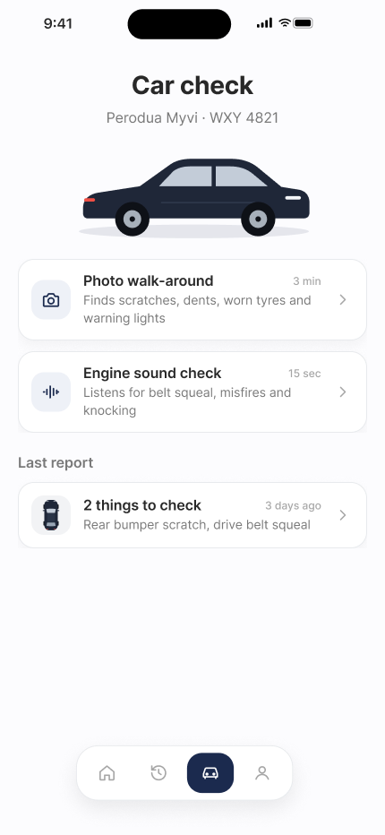
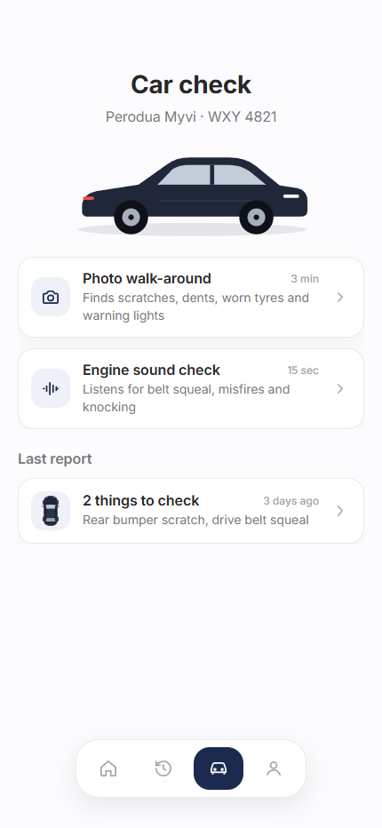
Original top-view car and eight numbered stops; guide at y439; steps card at y545.
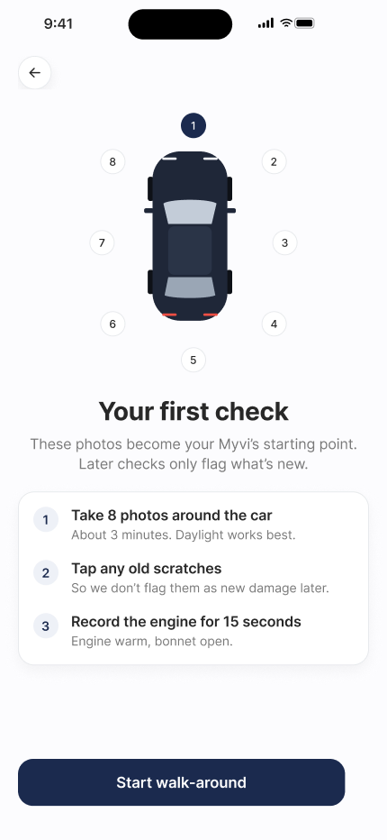
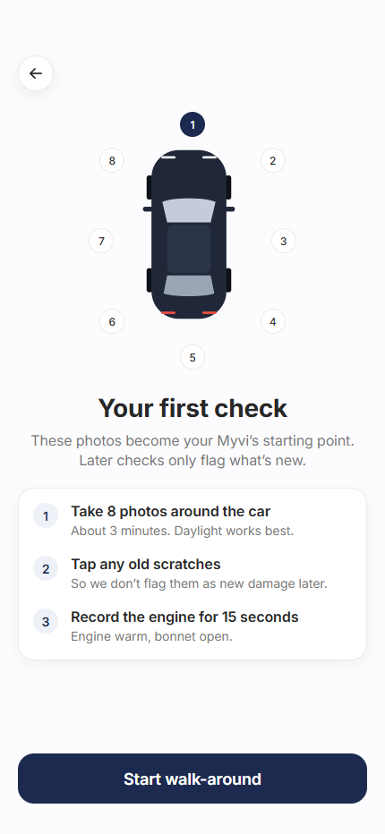
Original car, corner and shutter SVGs. Preview shows the Figma sample; normal entry requests the rear camera. Sample findings and quality ticks are hidden over live video.
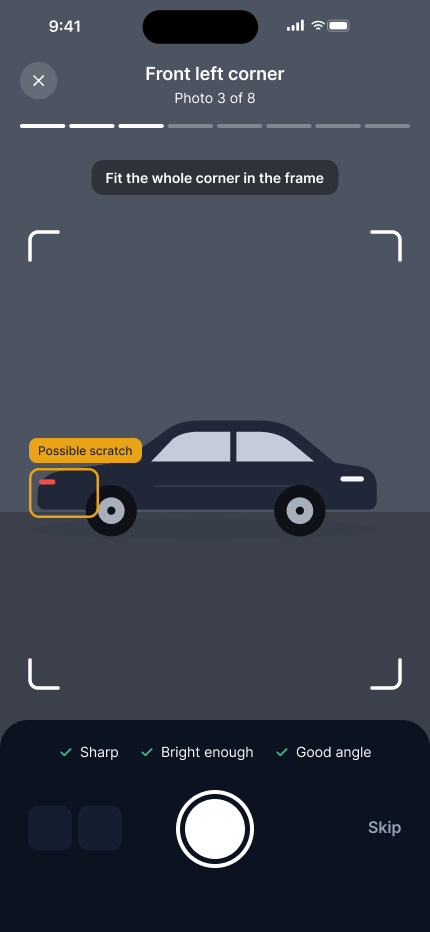
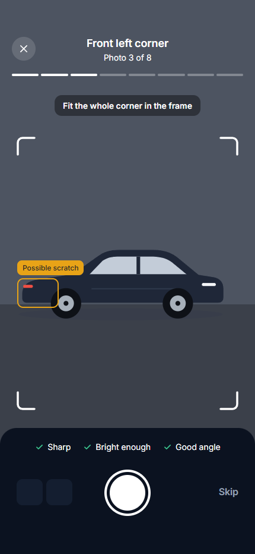
220px original ring and exported waveform. Heading wrapping, ring position and 74px findings match the reference. Values remain default props.
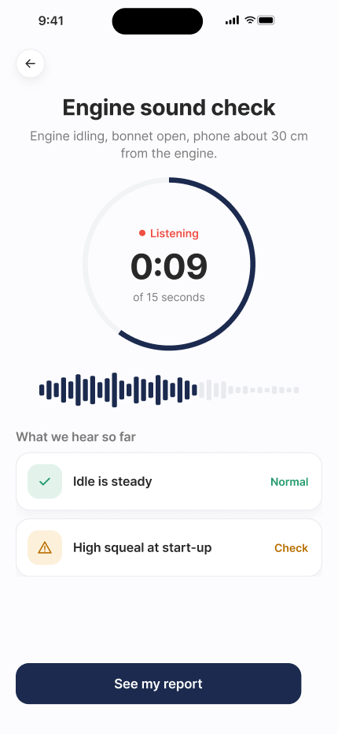
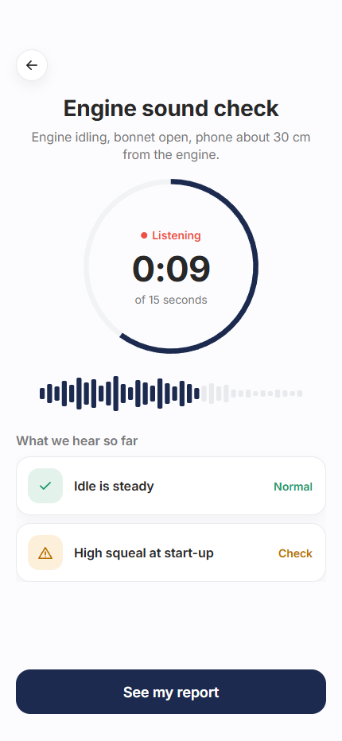
Original top-view car and six layered spots; repair prices centred vertically; 74px finding rows.
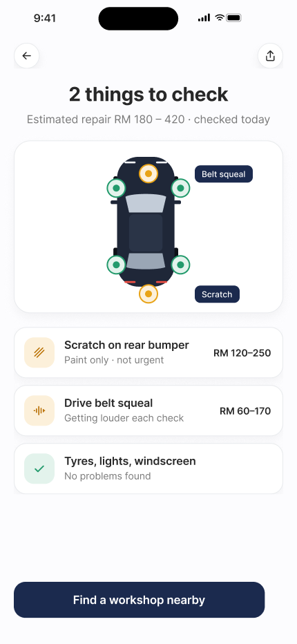
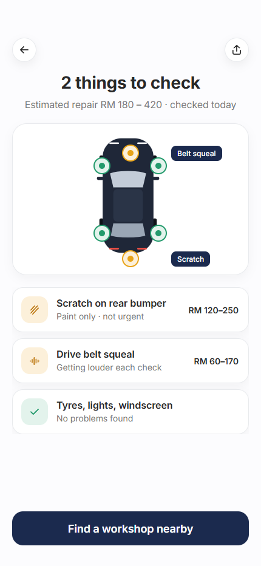
Original cropped car artwork, 220px photo, 200px details and 73px success panel.
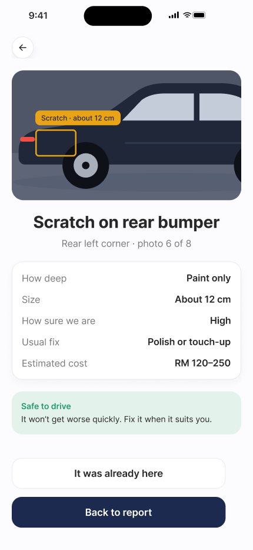
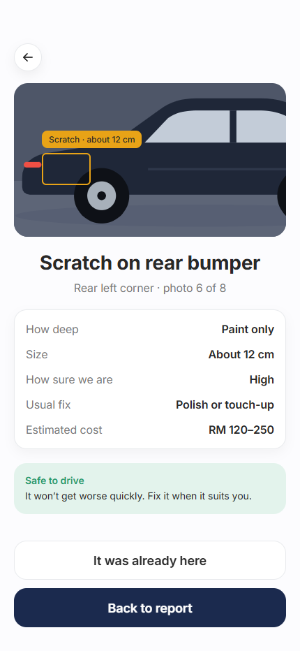
Original chart vectors and points. The chart scales as a group on narrow phones so labels remain visible. Two-week reminder downloads a local calendar event.
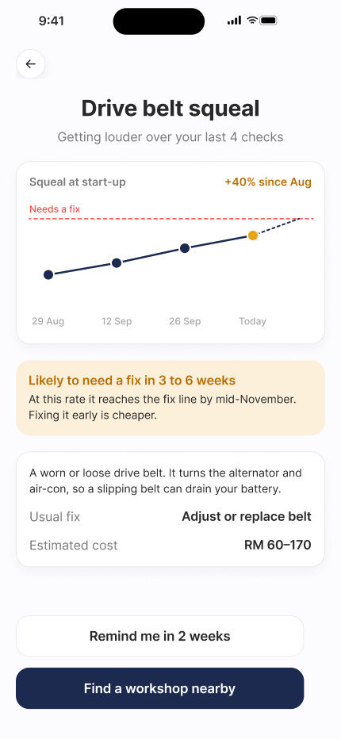
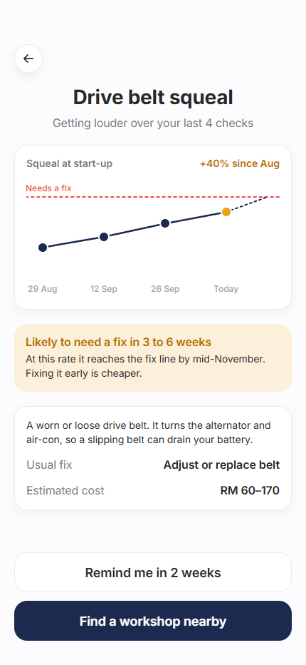